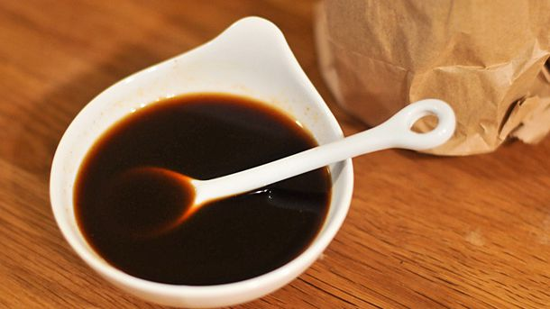

Salsa Worcestershire o Salsa Perrins, la salsa inglesa
Los Tres Chiflados
La salsa inglesa es famosa no sólo por ser habitual en muchas recetas de la gastronomía anglosajona desde hace 185 años, sino por haberse hecho conocida por dos nombres: Salsa Perrins o, más comunmente, el impronunciable Salsa Worscestershire.
Fue creada por los químicos John Wheeley Lea y William Perrins y continua vendiéndose con gran éxito desde que comenzará su venta en 1837 ya que se trata de un saborizante de lo más versátil que lo mismo sirve para potenciar los sabores del clásico Shepherd's Pie, usarse en salsas, pastas, acompañar platos de carnes y mariscos, aderezar platos crudos y ensaladas, e incluso como ingrediente de pizza.
Origen

Worcester
El uso de salsas de anchoa fermentadas en Europa se remonta al siglo XVII, y tiene su antecedente en la cocina grecoromana cuya tradición gastronómica utilizaba en sus recetas una salsa de pescado fermentada similar llamada garum.
La marca Lea & Perrins fue el primer tipo de salsa en comercializarse en Inglaterra (1837AD) bajo el nombre de Worcestershire. Aunque el origen de la receta de Lea & Perrins no está claro, el envase decía originalmente que la salsa provenía "de la receta de un noble del condado" (en inglés shire). La compañía también había afirmado que "Lord Marcus Sandys, ex gobernador de Bengala" la encontró mientras estaba en la India con la Compañía de las Indias Orientales en la década de 1830, y encargó a los boticarios locales que la recrearan (la asociación de John Wheely Lea y William Perrins de 63 Broad Street, Worcester).
Según la tradición de la empresa, cuando la receta se mezcló por primera vez allí, el producto resultante era tan fuerte que se consideró no comestible y el barril se abandonó en el sótano. Unos años más tarde, buscando hacer espacio en el área de almacenamiento, los químicos decidieron intentarlo nuevamente y descubrieron que la salsa fermentada durante mucho tiempo se había suavizado y ahora era apetecible. En 1838 se lanzaron al público en general las primeras botellas de Salsa Lea & Perrins Worcestershire.
Salsa Worcestershire casera
Actualmente la Salsa Worcestershire puede conseguirse envasada en botellas de distintos tamaños y materiales en cualquier supermercado y tiendas de especialidades. Sin embargo, aunque su receta es secreta y contiene gran cantidad de ingredientes como anchoas, vinagres, es posible replicar su sabor en casa de manera sencilla y con ingredientes baratos, comunes y fáciles de encontrar.
A continuación el paso a paso:
Ingredientes
- 125ml de vinagre de sidra de manzana
- 1 cucharada de azúcar morena
- ½ cucharada de jengibre en polvo
- ¼ cucharadita de mostaza
- 1 diente de ajo
- 1 cucharadita de Maicena
- 2 cucharadas de cebolla picada
- Una pizca de canela
- Una pizca de pimienta negra
- 3 cucharadas de agua
- 4 cucharadas de salsa de soja
- 1 cucharada de aceite de oliva virgen
- Jugo de limón (opcional)
Preparación
- Mezclar la maicena con 3 cucharadas de agua y reservar.
- Picar la cebolla y el diente de ajo.
- En una sartén pequeña calentar una cucharada de aceite a fuego medio y sofreír la cebolla
durante 3 minutos.
Agregar la cucharada de azúcar morena y remover hasta que se deshaga. - Añadir el diente de ajo y sofreír otro minuto
- Agregar la salsa de soja, la mostaza, la canela, el jengibre, la pimienta negra y continuar salteando por 30 segundos.
- Hechar la mezcla del agua con la maicena que habíamos reservado y remover para lograr una textura
más o menos densa.
Cocinar a fuego lento durante 4 minutos, removiendo bien para que se integren los ingrediente. - Verter la salsa en un recipiente apto para batidora y triturar hasta obtener una salsa fina.
Colar el resultado y añadir el jugo de limón(opcional) - Conservar en un recipiente hermético, o servir.
Se puede refrigerar por 1 o 2 meses.
Bloody Mary crocante con Salsa Worcestershire
La salsa inglesa no sólo es buena para acompañar los platos de carne, y darle sabor a nuestras salsas, sino que es perfecta para combinarla en tragos y cocteles por su sabor salado y ligeramente picante.
A continuación te dejamos un video con una receta muy particular de un clásico de la coctelerñia internacional con un toque de Salsa Worcestershire: